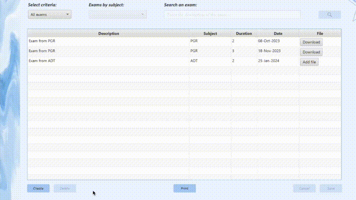
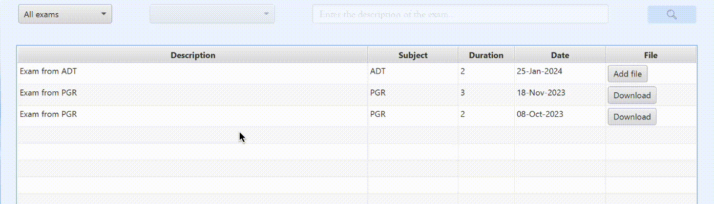
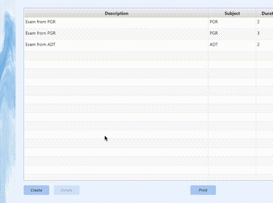

Esta ventana permite visualizar los exámenes asignados a cada usuario. Además de ello también se podrán descargar los enunciados de cada examen y un informe preparado para imprimir con todos los datos sobre todos los exámenes disponibles. La tabla incluye el nombre del examen, la asignatura a la que pertenece, su duración y fecha y el botón de descarga del enunciado. Se podrán hacer búsquedas de dos tipos: búsquedas por asignatura (el usuario Student o alumno debe estar matriculado en ella, mientras que el profesor deberá ser profesor de esa asignatura) y por el nombre del examen. Los usuarios de tipo Teacher o profesores podrán, además de todo lo anterior, crear, modificar y eliminar exámenes.
Cuando un profesor tenga asignada al menos una asignatura, podrá crear exámenes a través del botón Create. Al pulsar el botón se añadirá una nueva fila a la tabla donde el profesor podrá rellenar los datos del nuevo examen. Para guardar la información, pulsará el botón Save que comprobará que los datos sean válidos. Si desea cancelar la creación de un nuevo examen, se realizará mediante el botón Cancel.
Modificar exámenes
Para modificar un examen, el profesor podrá hacer doble clic sobre la celda que quiera editar. Al hacer esto, podrá cambiar información ya existente o añadir más. Tenga en cuenta que para guardar o cancelar debe usar los botones Save y Cancel respectivamente.
Borrar un exámen
Para borrar un exámen bastará ocn seleccionar la fila del examen y pulsar el botón Delete. Fíjese en como se habilita dicho botón al hacer clic sobre la fila. Tendrá que aceptar la eliminación de dicho examen en una ventana emergente.
Busqueda de exámenes
Hay 3 métodos en por los que mostrar los exámenes: mostrar todos, mostrarlos por asignatura y realizar una búsqueda del nombre del examen.
Opciones del cuadro combinado "Select criteria":
Imprimir un informe
Haciendo clic sobre el botón Print se abrirá una nueva ventana de previsualización que mostrará el documento del informe de datos de la tabla. Para guardar, pulse sobre el icono de guardar (con símbolo de disquete, arriba a la izquierda) y elija el directorio donde quiera almacenarlo.